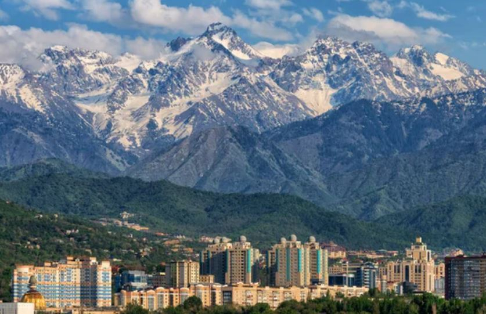
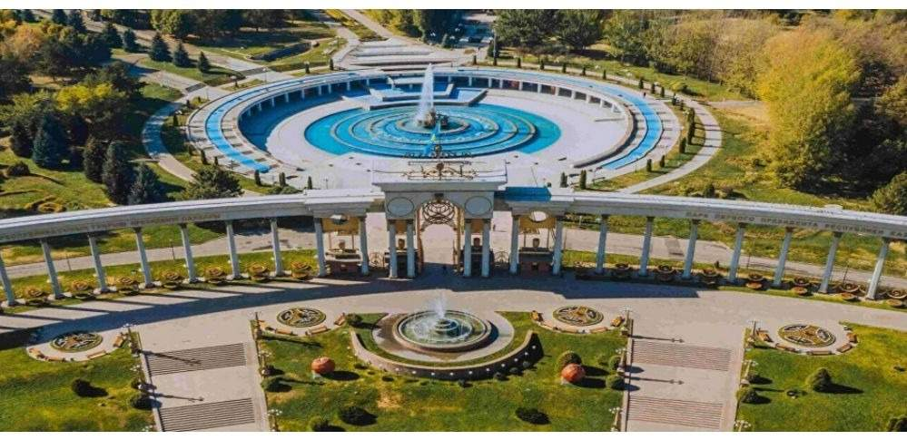
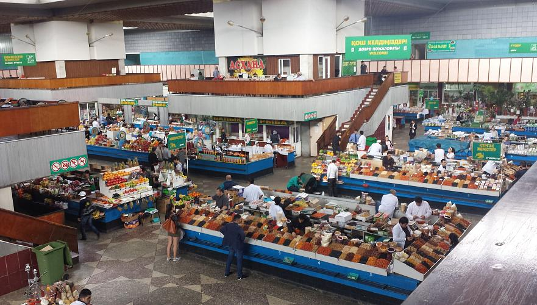

О нашем проекте
Travelling in Almaty — путеводитель по самым красивым и интересным местам города.
Мы собираем информацию о достопримечательностях, маршрутах, кафе и событиях, чтобы ваше путешествие было незабываемым.

Галерея Алматы





Популярные места

Медеу — горный каток

Шымбулак — горнолыжный курорт

Кок-Тобе — смотровая гора